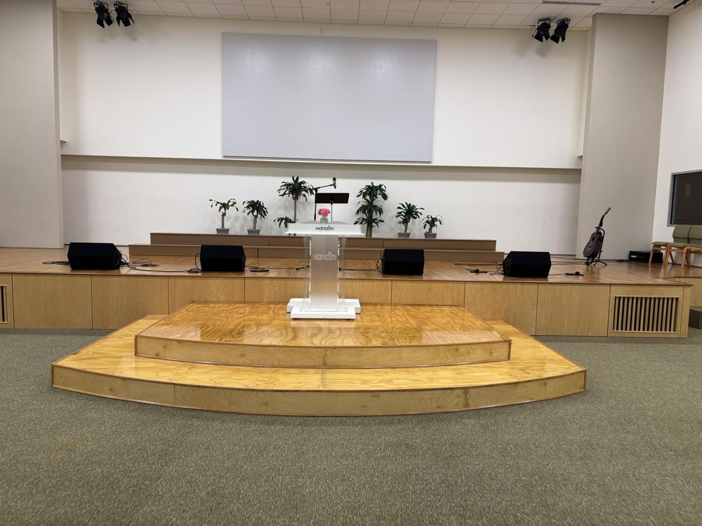
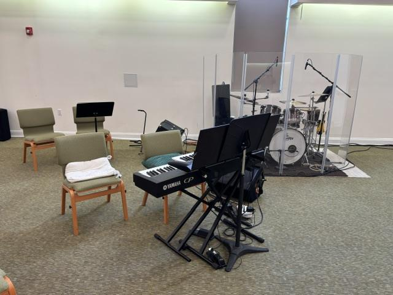
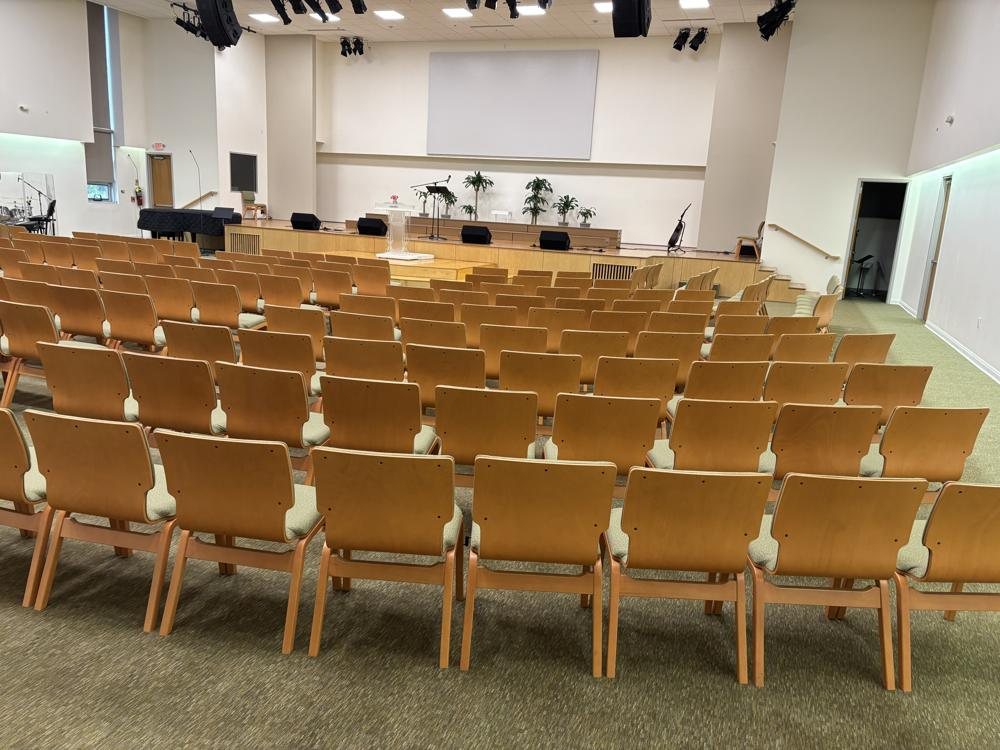
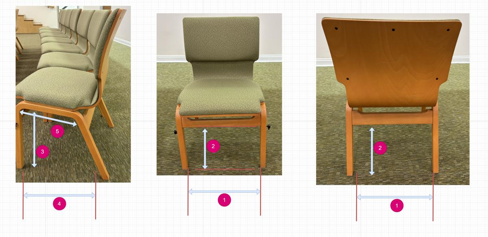
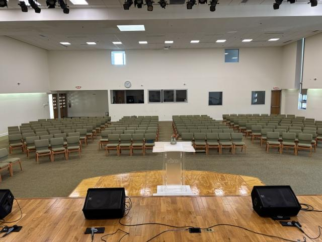
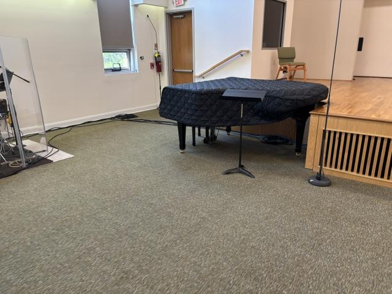
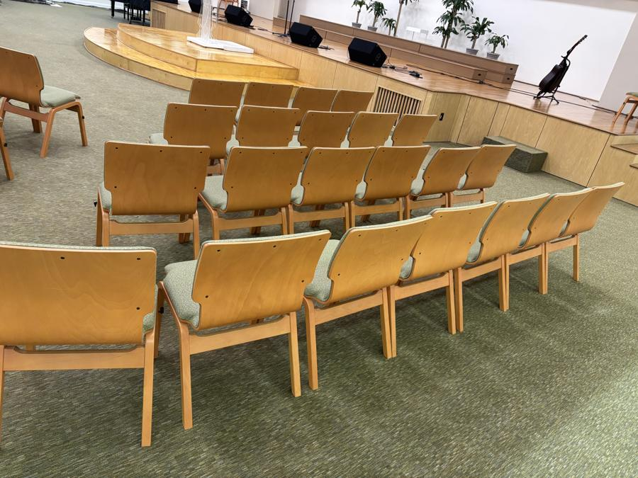

본당 청소 로봇 도입 계획
로봇청소기 3대가 매주 토요일 아침 본당 카페트를 의자 밑까지 청소하고, 스스로 복도로 돌아가 먼지를 비웁니다. 사람은 한 달에 한두 번 먼지봉투와 솔만 살피면 됩니다. 이 페이지는 구성, 예산, 효과, 일정을 기술 용어 없이 정리한 안내서입니다.
3대로봇청소기 (같은 모델)
토 09:00매주 1회, 본당이 빌 때
약 70분3대가 함께 청소하는 시간
223석의자 밑까지 청소
$2.7–4.3k처음 드는 비용
$10–17매주 드는 유지비
1 · 토요일 아침
사람이 아무것도 하지 않아도 청소가 끝납니다
2 · 본당 배치
의자 223석, 청소할 카페트 약 234 m²
뒤에서 강단을 바라볼 때 왼쪽부터 1–5열입니다. 강단과 강대상 계단은 나무 바닥이라 청소하지 않고, 왼쪽 앞의 피아노·드럼·키보드 주변은 전선이 많아 로봇이 들어가지 않게 막아 둡니다. 로봇마다 맡는 구역이 정해져 있어 서로 부딪힐 일이 거의 없습니다.
R1 · 1열 (64석)
R2 · 2·3열 (90석)
R3 · 4·5열과 앞 오른쪽 (69석)
로봇이 가지 않는 곳



3 · 의자 밑
로봇이 의자 밑으로 들어갑니다
재 보니 충분히 들어갑니다
- 의자 다리 사이는 45.5 cm, 로봇은 35 cm입니다.
- 의자 아래 막대 높이는 30 cm, 로봇 높이는 9.7 cm입니다.
- 의자 줄을 따라 옆으로 가는 길은 여유가 2–3 cm 정도로 좁아, 첫 로봇으로 직접 시험해 봅니다.
- 로봇은 의자 다리 892개를 지도에 기억하고 피해 다닙니다.

4 · 필요한 것
무엇을 사고 어디에 두나요
로봇청소기 3대 Dreame L40 Ultra Gen 2
카페트를 청소하고 의자 다리를 피해 다닙니다. 각자 충전대가 있어 먼지를 자동으로 비웁니다.
둘 곳: 기도실 복도 (벽 길이 약 1.8 m)천장 카메라 4대
위에서 바닥을 내려다보며 로봇 등에 붙인 표시 스티커로 위치를 찾습니다. 청소 시간에만 켜집니다.
둘 곳: 본당 천장, 네 구역 위작은 서버 컴퓨터 1대
책 한 권 크기의 컴퓨터입니다. 일정에 맞춰 로봇에게 출발·복귀를 지시하고 기록을 남깁니다.
둘 곳: 영상·방송실와이파이와 네트워크 장비
로봇 전용 와이파이와, 카메라에 전기와 신호를 한 줄로 보내는 스위치입니다.
둘 곳: 방송실 랙정전 대비 배터리 (UPS)
잠깐 전기가 나가도 서버와 와이파이가 꺼지지 않게 합니다.
둘 곳: 방송실문 자동 고정 장치 필요 시
청소 시간에 뒷문을 열어 두는 장치입니다. 방화문이면 화재경보가 울릴 때 자동으로 닫히는 제품만 쓸 수 있습니다.
대안: 관리 집사님이 토요일 아침 문을 열어 둠


5 · 연결 방식
로봇, 교회 서버, 휴대폰이 이렇게 이어집니다
모든 판단은 교회 안의 서버가 합니다. 인터넷이 잠깐 끊겨도 토요일 청소는 진행되고, 각 로봇 앱에도 같은 시간 예비 일정이 들어 있습니다.
6 · 예산
처음 드는 비용 약 $2,700–4,300
미국 가격 기준 추정입니다. 로봇 값은 할인 시기에 따라 대당 $499–649로 달라집니다. 막대는 최소부터 최대까지의 범위입니다.
1단계 · 시험
로봇 1대와 서버만 먼저 삽니다. 의자 밑 통과, 교회 서버 연결을 확인합니다.
약 $750–1,0502단계 · 설치
시험이 통과하면 로봇 2대, 카메라, 네트워크 장비를 삽니다.
약 $1,700–2,4003단계 · 필요 시
문 고정 장치가 필요하면 전기 기사 시공을 추가합니다.
약 $300–9007 · 유지비
매주 약 $10–17, 1년에 약 $540–900
"고장 대비 적립"은 실제로 나가는 돈이 아니라 수리·교체를 위해 모아 두는 금액입니다. 이를 빼면 실제 지출은 주당 약 $6–11입니다.
| 기간 | 적립 포함 | 실제 지출만 |
|---|---|---|
| 1주 | $10–17 | $6–11 |
| 1개월 | $45–75 | $26–45 |
| 1년 | $540–900 | $320–535 |
먼지봉투
로봇마다 8–10주에 한 번 교체
필터 · 솔
필터 3개월, 솔 6–12개월마다 교체
배터리
2–3년마다 교체 (대당 $60–90)
8 · 기대 효과
봉사자 시간을 1년에 약 130시간 돌려드립니다
가정: 지금은 봉사자 2명이 매주 약 1시간 30분씩 카페트와 의자 사이를 청소합니다(연 156시간). 로봇을 쓰면 확인과 소모품 관리에 주 15–30분이 듭니다. 실제 청소 시간을 알려주시면 이 그림을 고치겠습니다.
매주 같은 품질
사람마다 다르던 청소가 매주 같은 방식으로 이루어지고, 의자 밑까지 빠짐없이 지나갑니다.
먼지와 알레르기
카페트에 쌓이는 먼지를 매주 빨아들여 주일 예배 때 공기가 더 깨끗해집니다.
기록이 남음
날짜, 청소율, 걸린 시간이 남아 관리부가 상태를 한눈에 봅니다.
5년 총비용
약 $5,400–8,700. 아낀 봉사 시간 1시간당 약 $8–13입니다.
로봇이 모든 청소를 대신하지는 않습니다. 강단 나무 바닥, 계단, 악기 주변, 카페트 얼룩 제거는 지금처럼 사람이 해야 하고, 한 달에 한 번 정도는 의자 밑 구석을 눈으로 확인하는 것이 좋습니다.
9 · 일정
시험부터 정식 운영까지 약 6개월
1개월
로봇 1대 시험의자 밑을 지나가는지, 교회 서버에서 출발·복귀가 되는지 확인합니다. 여기서 계속 진행할지 결정합니다.
2–3개월
컴퓨터 안에서 가상 연습실제 본당 치수로 만든 가상 공간에서 3대가 함께 청소하는 규칙을 다듬습니다.
4개월
나머지 2대와 카메라 설치천장 카메라 4대와 네트워크 장비를 설치합니다. 전기 공사가 필요하면 이때 합니다.
5개월
성도 페이지 · 관리 페이지 공개휴대폰으로 청소 결과를 볼 수 있게 합니다.
6개월
시범 운영 후 정식 운영한 달 동안 매주 결과를 확인하며 구역과 시간을 조정합니다.
10 · 사생활과 안전
카메라와 로봇은 이렇게 다룹니다
카메라는 청소 시간에만
천장 카메라는 토요일 청소 시간에만 켜지고, 소리는 녹음하지 않습니다. 영상은 관리자만 보고, 성도 페이지에는 지도만 나옵니다. 본당 입구에 안내문을 붙입니다.
로봇에는 카메라가 없음
이 로봇은 레이저 센서로만 장애물을 피하고 사진을 찍는 카메라가 없습니다. 제조사 앱에는 청소 지도와 소모품 정보만 오갑니다.
빈 건물에서만
행사가 있는 토요일은 관리 페이지에서 건너뛰기로 지정합니다. 청소 중 사람이 들어오면 관리자가 휴대폰으로 바로 멈출 수 있습니다.
화재 · 정전
문 고정 장치는 화재경보가 울리면 자동으로 풀립니다. 정전이 되면 로봇은 그 자리에 멈추고, 서버는 배터리로 버팁니다.
11 · 결정할 것
관리부에서 정해 주실 것
- 1단계 예산 승인 (약 $750–1,050): 로봇 1대와 서버로 시험
- 뒷문 처리 방법: 문 고정 장치 설치, 또는 관리 집사님이 토요일 아침 문 열기
- 천장 카메라 설치 동의와 안내문 문구
- 청소 시간: 토요일 오전 9시가 괜찮은지, 행사가 많은 달의 대체 시간
- 담당 봉사자 1–2명: 한 달에 한두 번 먼지봉투와 솔 확인
- 본당 치수 확인: 좌우 벽 길이, 앞뒤 길이, 천장 높이, 의자 줄 간격
12 · 자주 묻는 질문
궁금하실 만한 것
로봇이 의자를 밀거나 넘어뜨리지 않나요?
로봇 무게는 약 4 kg이고, 의자 다리를 미리 보고 피합니다. 살짝 닿아도 의자가 서로 연결되어 있어 움직이지 않습니다.
물걸레 청소도 하나요?
아니요. 본당은 카페트라 물걸레 기능은 꺼 둡니다. 로봇 충전대에 물탱크가 있지만 비워 둡니다.
소음은 어느 정도인가요?
일반 가정용 청소기보다 조용한 수준(약 63 dB)입니다. 빈 건물에서만 돌리므로 문제가 없습니다.
고장 나면 어떻게 하나요?
로봇 3대가 같은 모델이라 고장 난 1대의 구역을 나머지 2대가 나눠 맡습니다. 부품은 온라인으로 쉽게 구할 수 있고, 고장 대비 적립금으로 처리합니다.
의자 배치를 바꾸면요?
큰 행사 뒤 배치가 바뀌면 관리자가 로봇 앱에서 지도를 한 번 다시 만들게 합니다. 자주 쓰는 배치는 저장해 둘 수 있습니다.
개인정보가 밖으로 나가지 않나요?
카메라 영상은 교회 안 서버에만 머물고 인터넷으로 나가지 않습니다. 로봇 제조사 앱에는 청소 지도와 소모품 정보만 오갑니다.